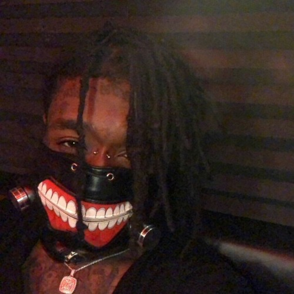

Tokyo Ghoul
By: Lil Uzi Vert
Lyrics:
[Intro]
(I’m working on dying)
Woo, woo, woo-woo
Woo, woo, woo-woo
Woo, woo, woo-woo
Woo, woo, woo-woo (Lil Uzi)
[Chorus]
I just brought a new Bentley coupe (Yeah)
Fifty bands, other pocket, 62
That bitch you with, she ain't new (New)
I made it rain, woo, where's the roof? (Roof)
Not talking money, what's your use?
Better get yo' bitch, she on the loose (Loose)
You got crash dummies that ain't gon' shoot (Shoot)
I get trap money in a Dickie's suit
[Verse 1]
Drumroll, jumbo bullets put his ass in a soup
I've been cooking up all night, I'm done by noon
Gucci shirt, Gucci belt, Gucci pants, yeah, Gucci on my boots
Get ya man, he's a bitch, he don't know I got my tool
Handy Manny, rubber band it, in the cut, need a bandage
Fuck her once, then abandon, Lil Uzi, I'm a bandit
Self-coolin' choppеr, Igloo FN, kinda quiet, but got damage
Thirty hittin', like a xanny
I'm a grizzly, likе the salmon (Let's go, let's go)
To get in my building, you need a laminate
Lil Uzi pull up in all matte Lamby (skrrt)
You know, know that I am never lackin'
Peanut butter my seats, so they never jammin'
Took advantage over every disadvantage
Got a crib on the beach so I'm water landin'
Got a crib on the beach so I water landed
Change the engine, my Bentley, it's hard to handle (Beep, beep)
[Chorus]
I just brought a new Bentley coupe (Yeah)
Fifty bands, other pocket, 62
That bitch you with, she ain't new
I made it rain, woo, where's the roof?
Not talking money, what's your use?
Better get yo' bitch, she on the loose
You got crash dummies that ain't gon' shoot
I get fast money in a suit
[Verse 2]
Woah, I'm off shrooms (Woah)
I can see everything on the moon (On the moon)
I feel like I'm in Tokyo Ghoul (Ghoul)
Uh, five girls with me, look like Sailor Moon (Sailor Moon)
Uh, fucked her last December, her name June (Her name June)
All this acid got me feeling like a goon (Woah, what?)
I was somewhere in Tokyo Ghoul (Yeah, oh)
All I see is that Tokyo Ghoul (Ghoul)
Woah, Tokyo Ghoul, yeah (Tokyo Ghoul, Tokyo Ghoul, say it three times)
I'm too cool, yeah (Yeah)
I been this way since school, yeah (No cap, no cap)
I brought a new Bentley coupe, ayy (Skrr)
Fifty bands on 62, ayy (Skrr)
That girl you with ain't new, ayy (Skrr)
Made it rain, now where's the roof? Ayy
Woo, woo
[Chorus]
I just brought a new Bentley coupe (Coupe)
Fifty bands, other pocket, 62
That bitch you with, she ain't new
I made it rain, woo, where's the roof? (Roof)
Not talking money, what's your use?
Better get yo' bitch, she on the loose (Loose)
You got crash dummies that ain't gon' shoot (Shoot)
I get fast money in a suit
